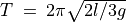

Acceleration due to gravity using Rod pendulum¶
Objective
Measure the period of oscillations of a rod pendulum using a light
barrier and calculate the value of acceleration due to gravity. Period
of oscillation of a uniform rod about one end is given by
, where  is the length and
is the length and  is the acceleration
due to gravity. The pendulum (T-shaped, a knife edge attached to a 6mm
dia rod) is made to swing between an LED and photo-transistor, connected
to expEYES. The LED and photo-transistor are mounted on a U-shaped
bracket as shown in figure.
is the acceleration
due to gravity. The pendulum (T-shaped, a knife edge attached to a 6mm
dia rod) is made to swing between an LED and photo-transistor, connected
to expEYES. The LED and photo-transistor are mounted on a U-shaped
bracket as shown in figure.


Procedure
- Oscillate the pendulum and click on START
- Repeat with different pendulum lengths.
Discussion
The time period is measured 50 times, using a 14.6cm rod pendulum, and
the average value is 0.627 seconds. The calculated value of ’g’ is
 , slightly different from the actual value due to the
following reasons. The length is measured from the knife edge to the
bottom and used in the formula. But there is a small mass projecting
above the knife edge that is not included in the calculation. Another
reason is that the pendulum may not be exactly vertical in the resting
position.
, slightly different from the actual value due to the
following reasons. The length is measured from the knife edge to the
bottom and used in the formula. But there is a small mass projecting
above the knife edge that is not included in the calculation. Another
reason is that the pendulum may not be exactly vertical in the resting
position.